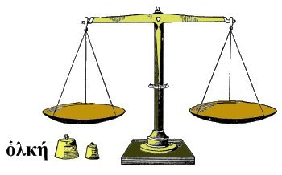

- ζυγά
-
- Parse: Noun: Nom/Acc Plur Neut
- Root: ζυγός
- ζυγίας
-
- Parse:
- Adj: Gen Sing Fem
- Adj: Acc Plur Fem
- Root: ζύγιος
- ζύγιος
-
- Parse: Adj: Nom Sing Masc/Fem
- Meaning: yoked
- Forms:
- ζυγίας Adj: Gen Sing Fem
- ζυγίας Adj: Acc Plur Fem
- ζυγοί
-
- Parse: Noun: Nom Plur Masc
- Root: ζυγός
- ζυγοῖς
-
- Parse: Noun: Dat Plur Masc/Neut
- Root: ζυγός
- ζυγόν
-
- Parse:
- Noun: Acc Sing Masc
- Noun: Nom/Acc Sing Neut
- Root: ζυγός

ζυγός
- ζυγός
-
- Parse: Noun: Nom Sing Masc/Neut
- Meaning:
- balance scales
- pair of balances, a balance beam
- yoke, a coupling
- oarsmen's benches joining (the opposite sides of a boat)
- Forms:
- ζυγοστάτης
-
- Parse: Noun: Nom Sing Masc
- Meaning: public weigher, person in charge of weights
- Forms:
| Masculine |
| | Singular | Plural |
|---|
| NOM | ζυγοστάτης | ζυγοστάται |
| GEN | ζυγοστάτου | ζυγοστατῶν |
| DAT | ζυγοστάτῃ | ζυγοστάταις |
| ACC | ζυγοστάτην | ζυγοστάτας |
- ζυγοῦ
-
- Parse: Noun: Gen Sing Masc/Neut
- Root: ζυγός
- ζυγόω
-
- Meaning: to yoke together, link together, join together
- Forms:
- ἐζυγωμένα Part: Perf Mid/Pass Nom/Acc Plur Neut
- ζυγῷ
-
- Parse: Noun: Dat Sing Masc/Neut
- Root: ζυγός
- ζῦθον
-
- Parse: Noun: Acc Sing Masc
- Root: ζῦθος
- ζῦθος
-
- Parse: Noun: Nom Sing Masc
- Meaning: beer, barley beer
- ζύμη
-
- Parse: Noun: Nom Sing Fem
- Meaning: leaven, yeast, ferment
- Forms:
- ζύμῃ
-
- Parse: Noun: Dat Sing Fem
- Root: ζύμη
- ζύμην
-
- Parse: Noun: Acc Sing Fem
- Root: ζύμη
- ζύμης
-
- Parse: Noun: Gen Sing Fem
- Root: ζύμη
- ζυμίταις
-
- Parse: Noun: Dat Plur Masc
- Root: ζυμίτης
- ζυμίτης
-
- Parse: Noun: Nom Sing Masc
- Meaning: leavened
- Forms:
| Masculine |
| | Singular | Plural |
|---|
| NOM | ζυμίτης | ζυμίται |
| GEN | ζυμίτου | ζυμιτῶν |
| DAT | ζυμίτῃ | ζυμίταις |
| ACC | ζυμίτην | ζυμίτας |
- ζυμοῖ
-
- Parse: Verb: Pres Act Ind 3rd Sing
- Root: ζυμόω
- ζύμομαι
-
- ζυμόω
-
- Active Meaning:
- to leaven
- to cause to ferment
- Passive Meaning:
- to be leavened
- to ferment
- Forms:
- ἐζυμώθη Verb: Aor Pass Ind 3rd Sing
- ἐζυμωμένη Part: Perf Mid/Pass Nom Sing Fem
- ἐζυμωμένοι Part: Perf Mid/Pass Nom Plur Masc
- ζυμοῖ Verb: Pres Act Ind 3rd Sing
- ζύμομαι Verb: Pres Mid/Pass Ind 1st Sing
- ζυμωθῆναι Verb: Aor Pass Infin
- ζυμωθῆναι
-
- Parse: Verb: Aor Pass Infin
- Root: ζυμόω
- ζυμωτόν
-
- Parse:
- Adj: Nom/Acc Sing Neut
- Adj: Acc Sing Masc
- Root: ζυμωτός
- ζυμωτός
-
- Parse: Adj: Nom Sing Masc
- Meaning: fermented, leavened
- Forms:
- ζυμωτόν Adj: Nom/Acc Sing Neut
- ζῦτος
-
- Parse: Noun: Nom Sing Masc
- Meaning: beer